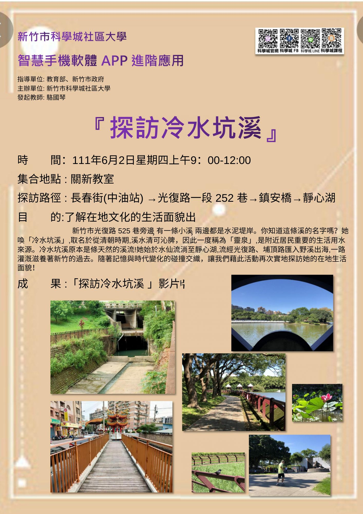
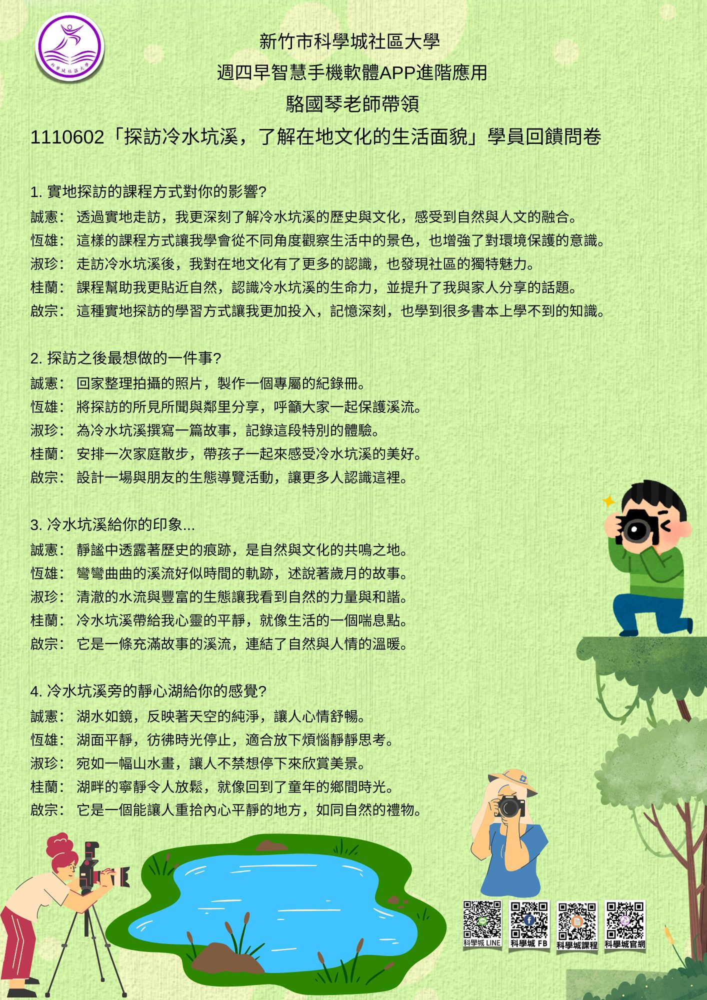
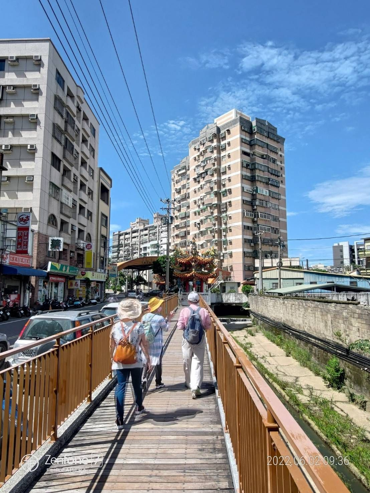

駱國琴老師
#親親遊冷水坑溪-
#在地文化
#活動軌跡
111春季1110602
主題：探訪冷水坑溪
班級：週四早智慧手機軟體app進階應用
帶領老師：駱國琴老師
內容：用手機拍下冷水坑溪的足跡
『探訪冷水坑溪』班級活動
活動時間： 111年6月2日（星期四）上午9:00-12:00
集合地點： 關新教室
探訪路徑： 長春街(中油站) → 光復路一段252巷 → 鎮安橋 → 靜心湖
活動目標與意義
此次活動由駱國琴老師帶領，響應李世英校長的倡議，透過實地走訪冷水坑溪，讓學員深入了解新竹在地文化與生活面貌。
冷水坑溪始於水仙，流淌至靜心湖，沿途灌溉並滋養著新竹的過去與現在，是新竹的重要生命脈絡之一。
冷水坑溪的名字取自清朝時期，因溪水清澈沁脾而得名「靈泉」。它原為一條天然溪流，供應附近居民的生活用水。
如今，隨著時代變遷，溪流周邊鋪設了水泥堤岸，但它仍然承載著豐富的歷史記憶與人文故事。
實地探訪的影響
透過此次探訪活動，學員們不僅認識了冷水坑溪的過去與現在，更從中感受到自然與文化的交融，提升了對環境保護的意識與對在地歷史的認同感。
冷水坑溪的生命力提醒我們珍惜自然資源，並共同努力保存在地文化。
未來規劃
活動結束後，學員們紛紛表達了深刻的感觸，希望未來能繼續舉辦類似活動，例如：
設計冷水坑溪生態導覽，邀請更多人認識它的美麗與故事。
帶領家人朋友一同走訪，分享冷水坑溪的點滴與記憶。
以冷水坑溪為主題，製作更多文化與歷史紀錄。
感謝每位學員的熱情參與與支持，期待在下一次活動中再次相聚，共同探索新竹的美好！


